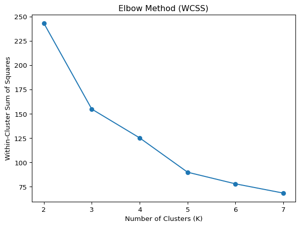
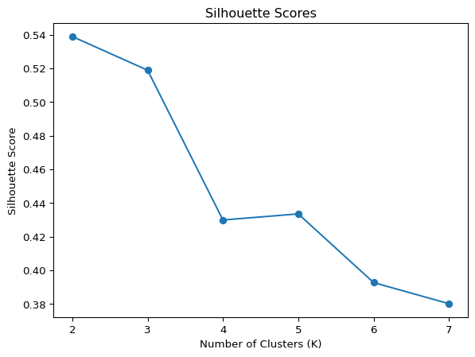

todo: do two analyses. Do one of either 1a or 1b, AND one of either 2a or 2b.
1a. K-Means
todo: write your own code to implement the k-means algorithm. Make plots of the various steps the algorithm takes so you can “see” the algorithm working. Test your algorithm on the Palmer Penguins dataset, specifically using the bill length and flipper length variables. Compare your results to the built-in kmeans function in R or Python.
Honestly, the model froms scratch looks like it did a pretty good job.
todo: Calculate both the within-cluster-sum-of-squares and silhouette scores (you can use built-in functions to do so) and plot the results for various numbers of clusters (ie, K=2,3,…,7). What is the “right” number of clusters as suggested by these two metrics?
If you want a challenge, add your plots as an animated gif on your website so that the result looks something like this.
The point where WCSS stops decreasing sharply indicates the best balance of compactness and simplicity
Elbow Method is showing that K=3 is the K while the Silhouette score shows K=2 to be the best with K=3 close. The higher the silhouette score the better the separation. So I would choose 3 because it’s the best for both metrics
from sklearn.metrics import silhouette_scorewcss = []silhouette_scores = []K_range =range(2, 8)for k in K_range: kmeans = KMeans(n_clusters=k, random_state=42).fit(scaled_data) wcss.append(kmeans.inertia_) silhouette_scores.append(silhouette_score(scaled_data, kmeans.labels_))# Plot WCSSplt.plot(K_range, wcss, marker='o')plt.title('Elbow Method (WCSS)')plt.xlabel('Number of Clusters (K)')plt.ylabel('Within-Cluster Sum of Squares')plt.show()# Plot Silhouette Scoresplt.plot(K_range, silhouette_scores, marker='o')plt.title('Silhouette Scores')plt.xlabel('Number of Clusters (K)')plt.ylabel('Silhouette Score')plt.show()


2b. Key Drivers Analysis
todo: replicate the table on slide 75 of the session 5 slides. Specifically, using the dataset provided in the file data_for_drivers_analysis.csv, calculate: pearson correlations, standardized regression coefficients, “usefulness”, Shapley values for a linear regression, Johnson’s relative weights, and the mean decrease in the gini coefficient from a random forest. You may use packages built into R or Python; you do not need to perform these calculations “by hand.”
If you want a challenge, add additional measures to the table such as the importance scores from XGBoost, from a Neural Network, or from any additional method that measures the importance of variables.
import pandas as pd
df = pd.read_csv(‘data_for_drivers_analysis.csv’)
Assume: last column is the target, all others are predictors
X = df[[“trust”, “build”, “differs”, “easy”, “appealing”, “rewarding”, “popular”, “service”, “impact”]] y = df[“satisfaction”]
pearson_corr = X.corrwith(y).abs() * 100
from sklearn.linear_model import LinearRegression from sklearn.preprocessing import StandardScaler